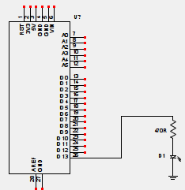

|
Nota
|
Questa pagina è attualmente in fase di costruzione. Si tratta di un testo di prova che vorrebbe esemplificare alcuni aspetti per la redazione di un articolo tecnico con minimo sforzo e massimo (possibile) risultato. |
Questa pagina illustra come far lampeggiare un led con la scheda
[
Mettere sempre prima del nome Arduino se si tratta della scheda, dell’IDE,
della libreria, della comunità, del Primo Re d’Italia, del vicino di casa, o di
qualsiasi altra cosa possa essere chiamata Arduino). Una questione di stile.]
Arduino.
Introduzione
|
Nota
|
Blink è una parola magica inglese che significa lampeggio. Bisogna tuttavia tenere in considerazione che in questo contesto fare lampeggiare un LED è un concetto che può essere esteso a mille altri eventi/azioni: accendere/spegnere un motore, emettere un suono, leggere una temperatura, bere un birra, ecc. ecc. |
In questo esempio, vengono utilizzati un led e una resistenza limitatrice di
corrente collegati come illustrato nel seguente schema elettrico. Uno dei pin
digitali della scheda Arduino, configurato come uscita viene collegato alla
resistenza limitatrice, in configurazione current source
[(note a
piedipagina in una pagina HTML, possono evere un senso?) Sorgente di corrente,
la corrente esce dal pin. Contrapposto alla configurazione Current sink,
Assorbimento di corrente, dove la corrente entra nel pin]
.

{kind=link}
La resistenza di 470 Ohm svolge una doppia funzione. Limitare la corrente erogata dal processore e conseguentemente ridurre la corrente che accende il led. Essendo la tensione in uscita di 5 Volt, l’assorbimento in corrente è pari a 0,011 Ampere (11 mA).
|
Nota
|
Se si volesse avere un margine di sicurezza maggiore si potrebbe usare una resistenza da 1K Ohm, ottenendo un assorbimento inferiore, pari a 5 mA. Con una conseguente riduzione di luminosità del led. |
Il software
Come possono esserci diversi modi per eseguire i collegamenti di uno schema elettrico, così possiamo scrivere il programma che lo controlla in altrettanti modi differenti.
|
Nota
|
Ci sono due modi per illustrare il software. Sbattere sulla pagina un listato chilometrico e pretendere che qualcuno lo legga. Oppure costruire passo passo il listato da zero (vedi dean camera). Il secondo approccio mi sembrerebbe migliore, ma molto più faticoso. |
Sulla pagina http://arduino.cc/en/Tutorial/Blink, molto simile nella sostanza a questa, è possibile vedere un esempio molto semplice che mostra come lampeggiare il led. Tuttavia esistono molti modi differenti per ottenere lo stesso risultato. Come al solito, in un esempio come questo, il software è molto semplice. Lo si può scaricare a questo indirizzo blink.ino:
/* Blink Turns on an LED on for one second, then off for one second, repeatedly. */ #define pinLed 13 #define DEBUGSERIALno void blinkled(int pin, unsigned long blinkdelay) { static unsigned long time=0; static int state = HIGH; if ( (millis()-time) > blinkdelay ) { time=millis(); // condition ? thenstatement: elsestatement; state = (state == LOW) ? HIGH: LOW; digitalWrite(pin, state); // sets the LED on #ifdef DEBUGSERIAL if (state == LOW) Serial.println("blink"); #endif }; return; } void setup() { // Pin 13 has an LED connected on most Arduino boards: // initialize digital pin 13 as an output. pinMode(pinLed, OUTPUT); #ifdef DEBUGSERIAL // 300, 600, 1200, 2400, 4800, 9600, 19200, 38400, 57600, or 115200 Serial.begin(57600); Serial.println("blink startup"); #endif } void loop() { blinkled(pinLed, 1000); }
- todo
-
spiega pedanticamente il software.
Riepilogo
- todo
-
adesso spiega cosa si è fatto, i risultati ottenuti e i possibili sviluppi